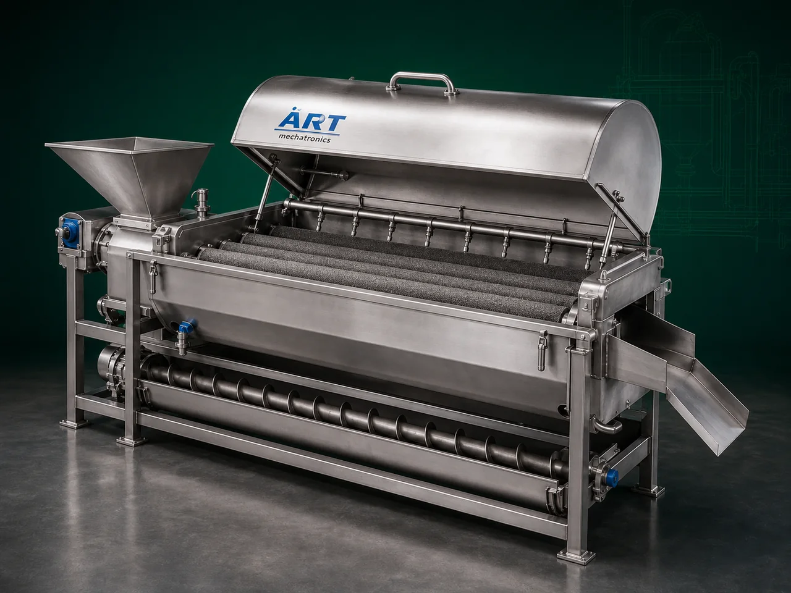

Peeler Machine (Industrial Fruit, Vegetable & Food Product Peeling System)
A Peeler Machine, also known as an Industrial Peeling Machine or Fruit & Vegetable Peeler, is an advanced food processing equipment designed for removing outer skin, peel, husk, shell, or surface layer from fruits, vegetables, roots, nuts, and food products quickly and efficiently.

About the Peeler Machine
The machine is widely used to improve: ✔ Processing speed ✔ Product hygiene ✔ Production efficiency ✔ Product appearance ✔ Labor reduction
Peeler machines use different peeling technologies such as: ✔ Abrasive peeling ✔ Knife peeling ✔ Brush peeling ✔ Steam peeling ✔ Roller peeling
depending on the product and processing requirement.
Industrial peeling machines are widely used in industries such as:
Food processing plants
Frozen food industries
Snack manufacturing plants
Fruit processing industries
Vegetable processing units
Spice processing industries
Ready-to-eat food industries
where fast, hygienic, and uniform peeling is essential.
The machine is suitable for: ✔ Potato peeling ✔ Onion peeling ✔ Garlic peeling ✔ Ginger peeling ✔ Carrot peeling ✔ Beetroot peeling ✔ Fruit skin removal ✔ Root vegetable processing
ART Mechatronics offers high-performance peeler machines, engineered for efficient peeling, minimal product loss, hygienic operation, and reliable industrial performance.
Working Principle of Peeler Machine
Fruits, vegetables, roots, or food products are loaded into peeling chamber
Depending on machine type, peeling occurs using: ✔ Abrasive rollers ✔ Brushes ✔ Cutting blades ✔ Steam treatment ✔ Friction action
Outer skin or peel gets removed efficiently
Product rotates or tumbles inside machine Ensures uniform peeling from all sides
Removed skin and waste separated automatically
Some models include integrated washing system for cleaner output
Peeled products discharged for further processing or packaging
Types of Peeler Machines
- 1. Abrasive Peeler Machine
Uses: ✔ Abrasive surface friction for potato, ginger, and root vegetable peeling.
- 2. Knife Peeler Machine
Uses: ✔ Precision cutting blades for smooth and accurate peeling applications.
- 3. Brush Peeler Machine
Uses: ✔ Rotating brush system for delicate fruit and vegetable peeling.
- 4. Steam Peeler Machine
Uses: ✔ High-pressure steam treatment for industrial food processing applications.
- 5. Garlic & Onion Peeler Machine
Specially designed for: ✔ Dry skin removal ✔ High-speed peeling operations
- 6. Continuous Industrial Peeler Machine
Suitable for: ✔ Large-scale food processing plants
Industries Using Peeler Machine
🍟 Snack Food Industry Potato and root vegetable peeling 🍃 Food Processing Industry Fruit and vegetable preparation 🥔 Frozen Food Industry Potato and vegetable processing 🌶️ Spice Industry Garlic and ginger peeling 🥫 Ready-to-Eat Food Industry Pre-processing and ingredient preparation 🍎 Fruit Processing Industry Fruit skin removal and preparation
Features & Advantages
✔ Fast and efficient peeling operation ✔ Uniform and hygienic peeling quality ✔ Reduces labor and processing time ✔ Minimal product wastage ✔ Continuous industrial operation ✔ Heavy-duty industrial construction ✔ Easy cleaning and maintenance ✔ Energy-efficient operation ✔ Suitable for multiple fruits and vegetables
Technical Highlights
Peeling Technology: Abrasive peeling Knife peeling Brush peeling Steam peeling Construction: Stainless Steel food-grade design Capacity: Small to large industrial throughput Operation: Batch type Continuous type Automation: Semi-automatic Fully automatic PLC-based
Turnkey Peeling Solutions
ART Mechatronics offers: Complete peeling and washing systems Conveyor integration Sorting and grading integration Food processing line automation Installation & commissioning After-sales service & AMC
Why Choose Art Mechatronics
Expertise in industrial food processing systems Customized peeling solutions for multiple products Hygienic food-grade machine construction High-performance and reliable operation Proven industrial performance across sectors
Applications
Food Processing Plants Frozen Food Industries Snack Manufacturing Facilities Fruit & Vegetable Processing Units Spice Processing Plants Ready-to-Eat Food Industries
Related Cleaning, Sorting & Grading machines
Get pricing & specs for the Peeler Machine
Share the product, target capacity, current process and plant location. These details help our engineers discuss the right machine or line configuration.
One partner, from design to start-up
ART Mechatronics designs, manufactures, installs and commissions your Peeler Machine solution with regional presence in India, UAE and Thailand.